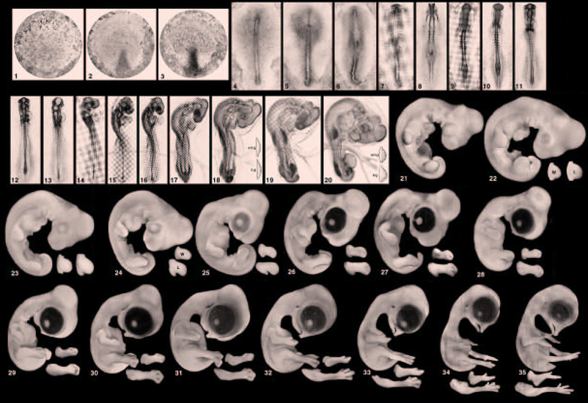
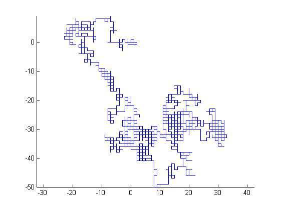
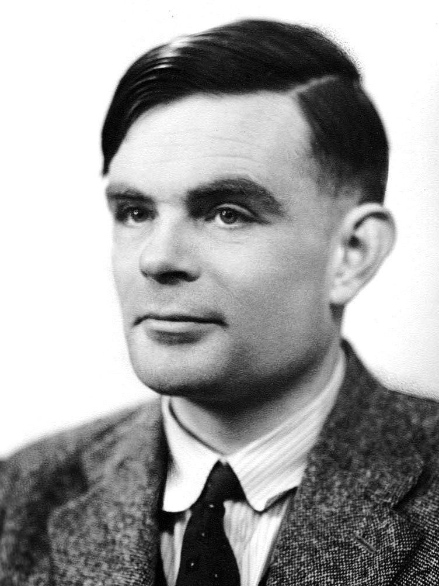

How the zebra got its stripes?
Animal coats - patterns in the wild

Image from Maini and Wooley (2019).
Where do animal coat patterns come from?
But it’s Developmental Biology Maths Week Scotland!!
We can use mathematics to
- develop conceptual models
- test hypotheses
- run simulations to try to understand system behaviour
- predict behaviour of complex systems
In turn, studying complex systems can result in the discovery of new mathematics.
Aim for today
Develop and simulate a model of a pattern forming system
Developing a mathematical model
- What is the question?
- Variables
- What processes are important?
- What kind of model is suitable?
- How would I know if the model was correct?
Excessive rumour spreading in the school assembly hall
Head teacher is concerned
Students interact within small groups
Pattern in which some groups have high levels of rumour spreading.
Within groups, a mix of rumour activators (A), inhibitors (I) and passive students (P).
Membership of groups changes over time.
Hypotheses in the staff room
A few bad ’uns
Pattern is an emergent phenomenon
Variables
Student have position: \[x_{i}(t)\]
Students can be in one of three states:
- Rumour activators (A)
- Rumour inhibitors (I)
- Passive (P)
\[ s_i(t)\in \{A,I,P\}. \]
Process 1: state transitions
Probability of passive (P) person becoming:
an activator (A) is \[ \propto \frac{ \bar{A}^2}{1+\bar{I}} \]
an inhibitor (I) is \[ \propto \bar{A}^2. \]
- Activator/inhibitor states are transient.
\(\bar{A}\) is the local density of activators.
Process 2 - random walk
- All students perform a random walk.
- make up of groups mix over time.

Running a simulation
Initialise: no pattern in space or state.
Define time (e.g. 0,1,…..,T)
Loop over time, apply processes to update the variables
Unpicking the simulations - state transitions + random walk
- Cell density is low here to help visualisation
Formation of spotted pattern
- Localised region of high activator and inhibitors levels
- Diffusion of inhibitors is faster
Differential equations and the Turing model
- Let \(u\) and \(v\) represent concentrations of chemicals rather than people! \[ u=u(\mathbf{r},t) \quad v=v(\mathbf{r},t) \]
\[ \begin{aligned} \frac{\partial u }{\partial t}&=D_u\nabla^2 u +f(u,v) \\ \frac{\partial v }{\partial t}&=D_v\nabla^2 v +g(u,v) \end{aligned} \]

Breaking the pattern formation conditions
Turing patterns
Image from Maini and Wooley (2019).
produce a wide variety of patterns
proposed in many different patterning systems
sensitive to parameter values and initial conditions
Conclusions
- We can use mathematics to study pattern formation in the wild!
- Complex behaviours/ patterns can emerge when interactive individuals follow simple rules
- The extent to which evolution uses Turing patterns is an open scientific question

Mathematics, University of Dundee